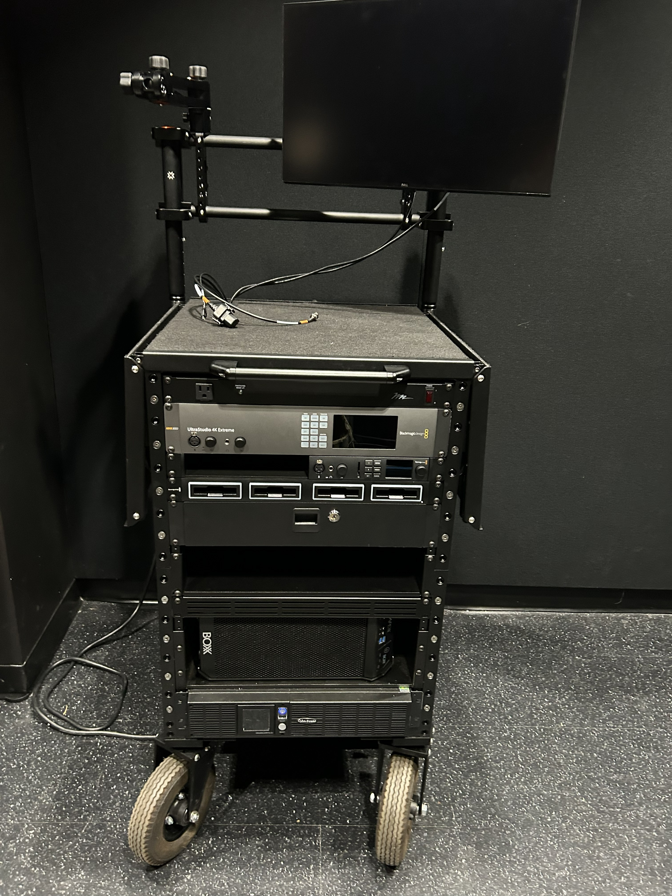

RIT’s student chapter of the Society of Motion Picture and Television Engineers (SMPTE) is a student run organization focused on education - throughout the semester, we host guest speakers and workshops related to film and technology. As the club secretary, I work with the other executive board members to organize meetings, coordinate speakers, and plan engaging workshops for RIT students. This week I decided to run a workshop on Digital Imaging Technicians (DIT). A DIT is an extremely valuable asset on set, but it’s rarely covered in film classes and many students want to DIT but have no idea how to get started. My goal was to introduce students to the role of a DIT, explain what the job looks like on student film sets, and give everyone a chance to work with the criminally underused DIT cart that we have here at MAGIC Spell Studios.
After a slideshow presentation on how to be a DIT and why it matters, we turned our focus to the DIT cart - a fully equipped workstation designed for data management, on-set monitoring, and live color grading, that any RIT film student can check out and use on their film projects, after proper training. As a MAGIC student employee, part of my job description includes training people on the cart, so I wanted to use this workshop as an opportunity to introduce more folks to the system and its advantages. We walked through the cart set-up, including attaching the Flanders Scientific reference monitor, connecting the backup power, and setting up the Tangent grading panel. We also practiced routing the camera feed through SDI so the image could be monitored in real time. We set up live color grading in DaVinci Resolve, allowing participants to play with the color controls and see how cool it is to get a chance to monitor and grade before even hitting record. It was awesome to get people excited about live grading and hopefully get inspired to make use of the DIT cart in their own projects down the line!

Check out the lecture slides if you're interested